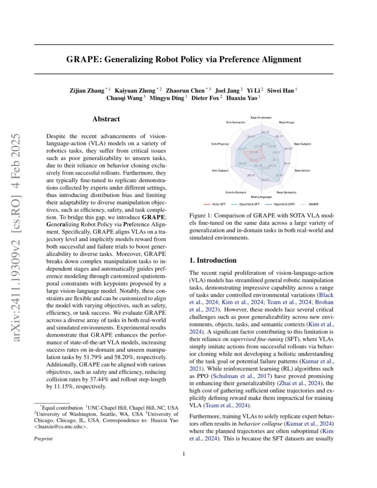
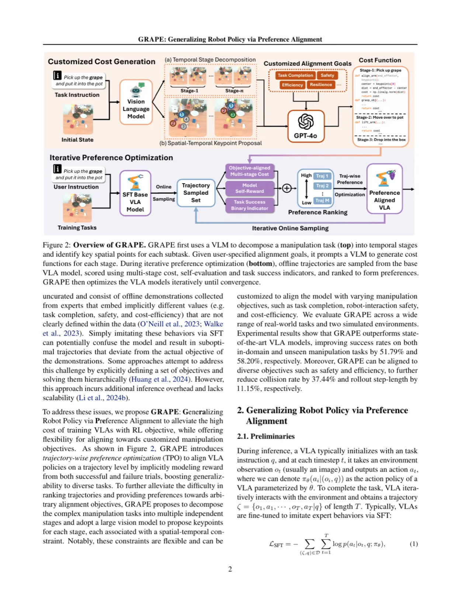
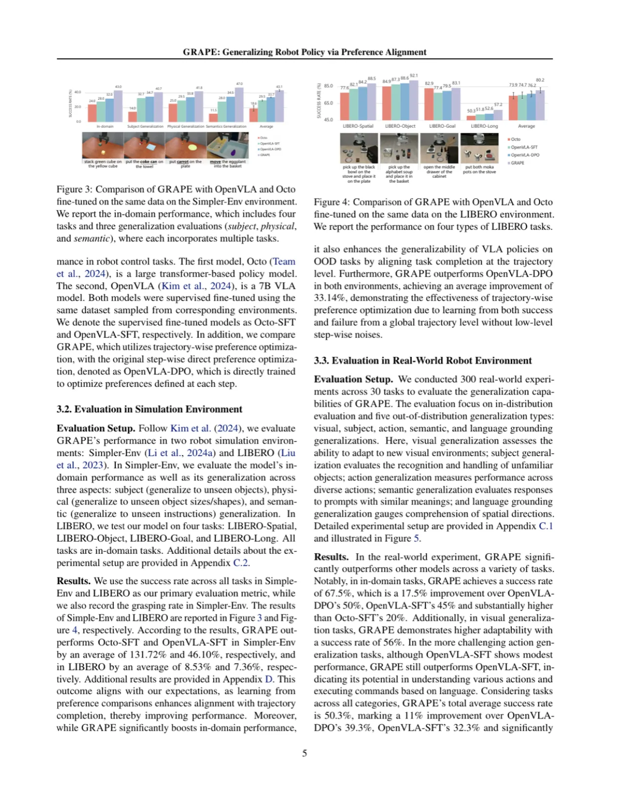
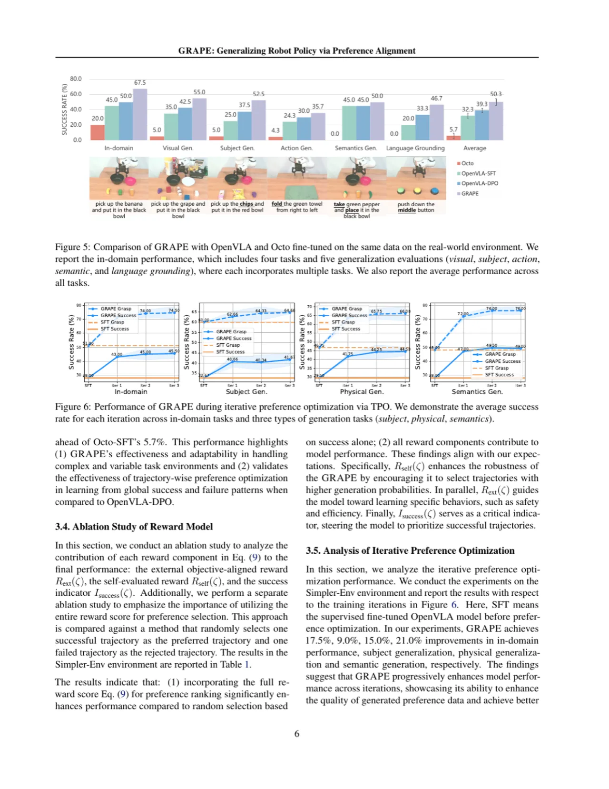
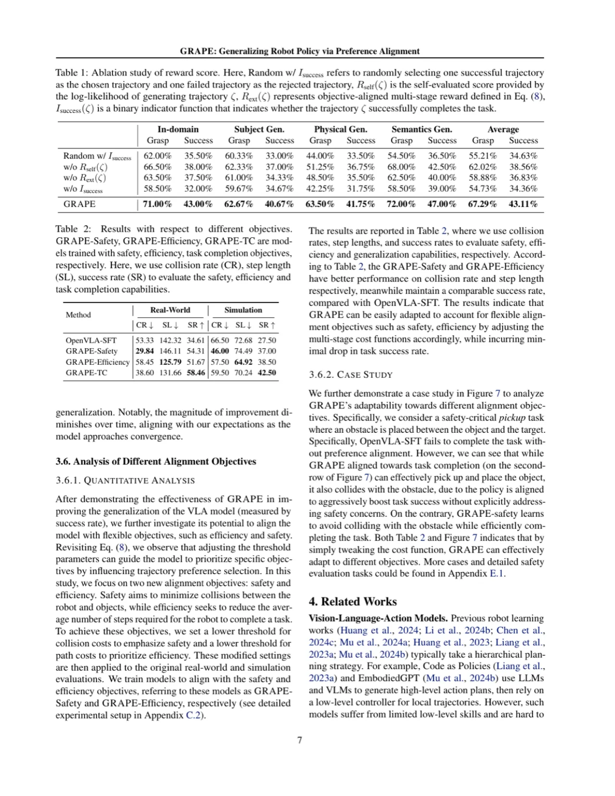

现有的 Vision-Language-Action（VLA）模型依赖行为克隆（behavior cloning），仅从专家成功示范中学习，导致对未见任务的泛化能力严重不足。GRAPE 提出轨迹级偏好优化（TPO）框架，利用大型视觉-语言模型自动分解任务阶段、生成时空约束，并从成功与失败轨迹对比中隐式建模奖励信号——无需精确定义奖励函数，即可将 VLA 对齐到完成率、安全性、效率等多种目标。
VLA 模型经过 supervised fine-tuning（SFT）后，在控制环境下表现出色，但在新物体、新语义、新场景等 out-of-distribution（OOD）条件下泛化能力严重不足。根本原因在于：SFT 仅从成功示范中做行为克隆，无法建立对任务目标和潜在失败模式的整体理解；同时，数据集通常收集自不同专家，隐含不同价值取向（完成率、安全性、效率），简单模仿反而造成目标混乱。
"VLAs simply imitate actions from successful rollouts via behavior cloning while not developing a holistic understanding of the task goal or potential failure patterns."

现有强化学习（RL）方案（如 PPO）理论上可增强泛化能力，但存在三大瓶颈：
GRAPE 框架由两个核心模块构成：轨迹级偏好优化（TPO）定义从轨迹对比中学习的训练目标；引导代价偏好生成（GCPG）利用 VLM 自动为任意对齐目标合成偏好排序数据。二者结合，通过在线迭代采样不断提升策略质量。

传统 DPO 在 step 级别做偏好优化，忽视了轨迹的全局语义。GRAPE 将 KL-正则化 RL 目标（Eq. 2）通过 Bradley-Terry 模型重参数化，推导出轨迹级 TPO 损失：
LTPO = −E(ζw,ζl) log σ( β · [log πθ(ζw)/πref(ζw) − log πθ(ζl)/πref(ζl)] )
进一步利用 MDP 性质将轨迹对数似然分解为逐步 state-action 对之和（Eq. 6），使 VLA 直接以 step-wise rollout 执行轨迹级对齐。相比 step-wise DPO（OpenVLA-DPO），TPO 在全局轨迹维度对策略施加约束，避免低层噪声干扰，并同时从成功与失败轨迹中提取信号，显著提升泛化能力。
GCPG 自动构建偏好数据，消除人工标注需求：
通过调整 GCPG 代价函数的阈值参数即可切换对齐目标，无需重新设计训练流程。
在两个仿真平台（Simpler-Env、LIBERO）和真实机器人环境（30 个任务，300 次实验）上与 Octo-SFT、OpenVLA-SFT、OpenVLA-DPO 进行系统比较。评测维度涵盖领域内任务及五类分布外泛化：视觉（visual）、主体（subject）、动作（action）、语义（semantic）和语言接地（language grounding）泛化。

| 环境 / 对比方法 | Octo-SFT | OpenVLA-SFT | OpenVLA-DPO | GRAPE（本文） |
|---|---|---|---|---|
| Simpler-Env 平均成功率 ↑ | 15.22% | 29.33% | — | 38.67% |
| LIBERO 平均成功率 ↑ | 73.9% | 77.4% | — | 83.1% |
| 真实机器人总平均成功率 ↑ | 5.7% | 32.3% | 39.3% | 50.3% |
| 真实机器人领域内成功率 ↑ | 20.0% | 45.0% | 50.0% | 67.5% |

| 方法 | Collision Rate ↓（真实） | Step Length ↓（真实） | Success Rate ↑（真实） | Collision Rate ↓（仿真） | Step Length ↓（仿真） | Success Rate ↑（仿真） |
|---|---|---|---|---|---|---|
| OpenVLA-SFT | 53.33 | 142.32 | 34.61 | 66.50 | 72.68 | 27.50 |
| GRAPE-Safety | 29.84 | 146.11 | 54.31 | 46.00 | 74.49 | 37.00 |
| GRAPE-Efficiency | 58.45 | 125.79 | 51.67 | 57.50 | 64.92 | 38.50 |
| GRAPE-TC | 38.60 | 131.66 | 58.46 | 59.50 | 70.24 | 42.50 |
注：GRAPE-Safety 将碰撞率降低 37.44%，GRAPE-Efficiency 将步长减少 11.15%，同时维持与 OpenVLA-SFT 相近的任务成功率——证明通过调整代价函数阈值即可灵活切换对齐目标。

消融结果表明：
GRAPE 的 GCPG 模块需要调用外部 VLM（如 GPT-4o）来自动生成阶段分解和代价函数。这引入了对强大商业 API 的依赖，增加了推理成本，且代价函数质量受限于 VLM 本身的推理能力和 prompt 设计，在极端任务场景下可能失效。
论文明确指出仅讨论"binary case where only one chosen/rejected trajectory is present"，以控制训练成本。扩展到多轨迹排序（list-wise preference）可能进一步提升性能，但会显著增加计算开销。
GRAPE 需要在每轮迭代中在线采样大量轨迹、分解阶段、计算代价并重新训练，整体训练成本高于直接 SFT。论文在 Implementation Details 中指出训练细节，但未提供具体的训练时间或 GPU 小时对比。
Table 2 数据显示，GRAPE-Safety 在降低碰撞率的同时步长略有增加（146.11 vs 142.32），GRAPE-Efficiency 减少步长但碰撞率略升（58.45 vs 53.33）。两种对齐目标之间存在一定的 trade-off，同时优化多个目标的方法尚未被探索。
真实机器人实验共 30 个任务、300 次实验，仿真实验在 Simpler-Env 和 LIBERO 两个标准 benchmark 上进行。这些任务集合相对固定，方法在更大规模、更开放世界的场景（如 Open X-Embodiment 全分布）中的表现尚不明确。